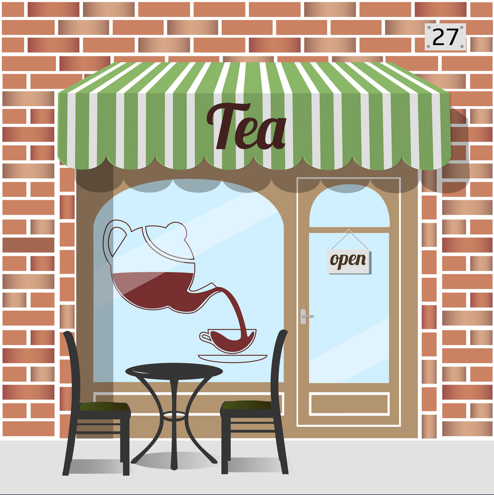

Our journey began with a simple yet profound love for the art of tea, and it has since blossomed into a haven for tea enthusiasts and casual sippers alike. At Tea Shop, we believe in the power of a perfectly brewed cup to elevate your day, whether you seek solace in a quiet moment alone or wish to share the joy of tea with friends and family. Our selection is a carefully curated symphony of flavors, featuring premium teas sourced from renowned estates around the globe. We are more than just a tea shop; we are curators of a sensory journey. Our commitment to quality extends beyond the leaves in your cup. From the moment you step into our shop, you'll be enveloped in an atmosphere of warmth and tranquility, inviting you to explore the diverse world of tea with all your senses. What sets us apart is our dedication to providing not just products, but an education in tea. Our knowledgeable staff is here to guide you through our selection, offering insights into brewing techniques, tea pairings, and the rich cultural tapestry woven into each variety. As stewards of tea culture, we are on a mission to share the magic of tea with the world. Whether you're a seasoned connoisseur or a newcomer to the world of loose leaves, we invite you to join us on this aromatic adventure. Indulge in the artistry of tea at Tea Shop, where every cup tells a story, and every sip is an invitation to savor life's moments, one tea leaf at a time.
"Sip by sip, tea unveils the poetry of the day."